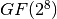
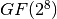

E2¶
Description¶
E2 is a symmetric block cipher which was created in 1998 by NTT and submitted to the AES competition. E2 has an input transformation and output transformation that both use modular multiplication, but the round function itself consists only of XORs and S-box lookups. The single 8×8-bit S-box is constructed from the composition of an affine transformation with the discrete exponentiation  over the finite field . NTT adopted many of E2’s special characteristics in Camellia, which has essentially replaced E2.
over the finite field . NTT adopted many of E2’s special characteristics in Camellia, which has essentially replaced E2.
Summary¶
| S-box | NL | LD | DEG | AI | MAXAC |  |
LP | DP |
|---|---|---|---|---|---|---|---|---|
| S | 100 | 38 | 6 | 4 | 104 | 236800 | 0.0478515625 | 0.0390625 |
S¶
Representations¶
Polynomial representation in ANF
Walsh Spectrum representation (except first row and column):

Other useful information in cryptanalysis¶
Cycle structure:
| Cycle length | Number of cycles |
|---|---|
| 2 | 1 |
| 3 | 1 |
| 7 | 1 |
| 24 | 1 |
| 64 | 1 |
| 156 | 1 |
There are no linear structures
It has no fixed points.
It has 2 negated fixed points: (0,0,1,0,1,0,0,1), (1,0,0,0,1,0,1,1)